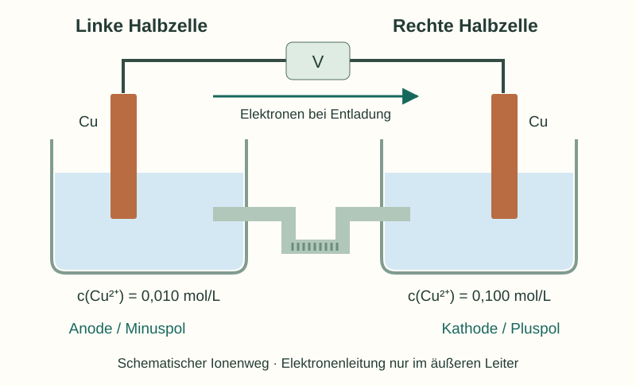
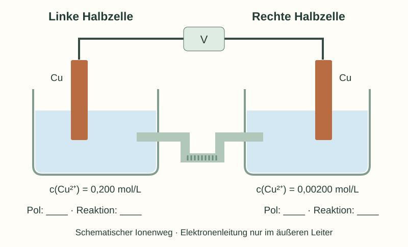

Informieren
Erklärung und Beispiel öffnen
Dasselbe Metall bedeutet nicht dasselbe Potential
Zwei Kupferhalbzellen besitzen dasselbe Standardpotential. Ihre tatsächlichen Potentiale können verschieden sein, wenn die Cu²⁺-Aktivitäten unterschiedlich sind. Im vereinfachten Konzentrationsmodell hat die höher konzentrierte Cu²⁺-Lösung das höhere Reduktionspotential.
Bei galvanischer Entladung wird deshalb an der konzentrierteren Seite Cu²⁺ reduziert und Kupfer abgeschieden. An der verdünnteren Seite wird Kupfer oxidiert; Cu²⁺ gelangt in die Lösung. Die Konzentrationsdifferenz wird kleiner. Die Konzentration meint gelöste Cu²⁺-Ionen, nicht die Größe oder Masse des Kupferblechs.

Beispiel: Veränderungen in der skizzierten Zelle
Links gilt Cu(s, links) → Cu²⁺(aq, links) + 2 e⁻; die Metallmasse nimmt ab und die Cu²⁺-Konzentration steigt. Rechts gilt Cu²⁺(aq, rechts) + 2 e⁻ → Cu(s, rechts); die Metallmasse nimmt zu und die Konzentration sinkt. Ortsangaben sind nötig: Die beiden Cu²⁺-Anteile befinden sich in verschiedenen Zuständen und dürfen in der Gesamtbilanz nicht einfach weggekürzt werden.
Elektronen fließen im äußeren Leiter. Im Elektrolyten und in den Frittenporen tragen Ionen den Strom. Die Lösung bleibt im Inneren annähernd elektrisch neutral; Sulfat- und Kupferionen wirken am Ladungstransport mit. Einzelne Ionenwege sind mit einer bloßen Spannungsmessung nicht nachgewiesen.
Messung und Entladung unterscheiden: Bei hochohmiger Messung sind sichtbare Massenänderungen im kurzen Beobachtungszeitraum nicht zu erwarten. Diffusion durch die Verbindung kann den Konzentrationsunterschied auch ohne nutzbare elektrische Arbeit verringern.
A · Eine neue Konzentrationszelle erklären
Für die folgende Zelle gilt das Konzentrationsmodell bei 25 °C. Die Lösungen enthalten Cu²⁺-Ionen; beide Elektroden sind aus reinem Kupfer. Für die Deutung der Entladung wird ein äußerer Verbraucher gedanklich anstelle des Voltmeters betrachtet.

- Ergänze Plus-/Minuspol sowie Anode/Kathode. Begründe die Zuordnung durch den Potentialvergleich.
- Formuliere beide Teilreaktionen und die Gesamtreaktion mit Ortsangaben. Zeichne die Richtung der Elektronen im äußeren Stromkreis ein.
- Sage für jede Halbzelle die Änderung von Elektrodenmasse und Cu²⁺-Konzentration beim Entladen voraus. Beschreibe, wie sich die Spannung dabei im Modell entwickelt.
Unbearbeitete Zellskizze herunterladen (SVG)

Hilfe 1
„Links“ oder „rechts“ legt die Polung nicht fest. Vergleiche zuerst die beiden Konzentrationen beim gleichen Redoxpaar.
Hilfe 2
Wo Cu²⁺ reduziert wird, entsteht Metall. Wo Kupfer oxidiert wird, gelangt Cu²⁺ in die Lösung. Die freiwillige Reaktion verringert den vorhandenen Konzentrationsunterschied.
Musterlösung
Links: höhere Konzentration → höheres Potential → Kathode/Pluspol. Teilreaktion: Cu²⁺(links) + 2 e⁻ → Cu(links). Die Elektrodenmasse steigt, die Cu²⁺-Konzentration sinkt.
Rechts: niedrigere Konzentration → niedrigeres Potential → Anode/Minuspol. Teilreaktion: Cu(rechts) → Cu²⁺(rechts) + 2 e⁻. Die Elektrodenmasse sinkt, die Cu²⁺-Konzentration steigt.
Gesamt: Cu(rechts) + Cu²⁺(links) → Cu²⁺(rechts) + Cu(links). Elektronen fließen bei Entladung im äußeren Leiter von rechts nach links. Ionen tragen den inneren Strom.
Die Konzentrationen nähern sich an, ihr Verhältnis nähert sich 1. Dadurch nimmt die ideale Leerlaufspannung ab; bei gleichen Aktivitäten beider Halbzellen ist sie 0 V. Eine belastete Spannung kann zusätzlich durch Innenwiderstand und Polarisation beeinflusst werden.
B · Was bewirkt welche Veränderung?
Ausgangszustand ist die Zelle aus Aufgabe A. Rot ist links und COM rechts angeschlossen; die Anzeige ist positiv. Bearbeite die drei Fälle unabhängig voneinander.
- Nur die Messleitungen werden vertauscht. Was ändert sich an Anzeige, Polung und modellierter Entladerichtung?
- In einem neuen Gedankenaufbau werden die beiden Konzentrationen den jeweils anderen Seiten zugeordnet; Rot bleibt links und COM rechts. Was ändert sich jetzt?
- Bei einer kurzen hochohmigen Spannungsmessung ist keine neue Kupferschicht sichtbar. Jemand folgert: „Dann kann die Konzentrationszelle keine Redoxreaktion liefern.“ Bewerte diese Schlussfolgerung. Nenne außerdem einen Vorgang, der den Konzentrationsunterschied ohne äußeren Entladestrom verringern kann.
Hilfe 1
Ein Leitungswechsel verändert, welche Potentialdifferenz das Gerät mit positivem Vorzeichen zählt. Ein Konzentrationswechsel verändert die Halbzellen selbst.
Hilfe 2
Vergleiche getrennt: Anzeige = E(rot) − E(COM); Kathode = höheres tatsächliches Potential. Ein hochohmiges Voltmeter ist nahezu kein Verbraucher.
Musterlösung
- Die Anzeige wird negativ, bei sonst unverändertem Zustand mit etwa gleichem Betrag. Links bleibt Kathode/Pluspol, rechts Anode/Minuspol; die Entladerichtung ändert sich nicht. Die Messleitungen erzwingen keine umgekehrte chemische Reaktion.
- Nun liegt die höhere Konzentration rechts: rechts Kathode/Plus, links Anode/Minus. Bei Entladung fließen Elektronen von links nach rechts. Rot links/COM rechts zeigt negativ an. Hier haben sich die chemischen Bedingungen und deshalb auch die Rollen der Halbzellen geändert.
- Die Schlussfolgerung ist falsch. Bei hochohmiger Messung ist der Strom so klein, dass sichtbare Massenänderungen im kurzen Zeitraum nicht erwartet werden. Die Teilgleichungen beschreiben den Entladefall. Zusätzlich kann Diffusion durch die ionenleitende Verbindung Konzentrationen angleichen, ohne dabei einen nutzbaren äußeren Entladestrom zu liefern.
Zurück zur Checkliste
Kannst du den Punkt jetzt an einer eigenen Erklärung oder einer neuen Aufgabe nachweisen? Ordne dich ein: sicher (selbstständig), teils (mit Hilfe) oder offen (noch Lernbedarf). Notiere bei Bedarf, was du noch klären möchtest.
Fachliche Quellen und Modellgrenzen
Rechnungen beziehen sich auf 25 °C, reine Metalle und das jeweils angegebene Redoxpaar. Aktivitäten werden nur dort näherungsweise durch c/c° ersetzt, wo das ausdrücklich genannt ist. Beiträge der Flüssigkeitsgrenzen werden im Rechenmodell vernachlässigt; reale Frittenzellen können zusätzliche Diffusionspotentiale aufweisen.
Eigene Erklärungen, Aufgaben und Grafiken. Zahlenbeispiele sind didaktisch gewählt; konstruierte Messdaten sind ausdrücklich gekennzeichnet.